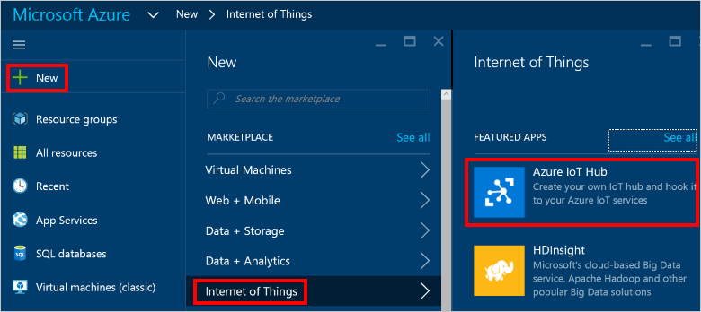
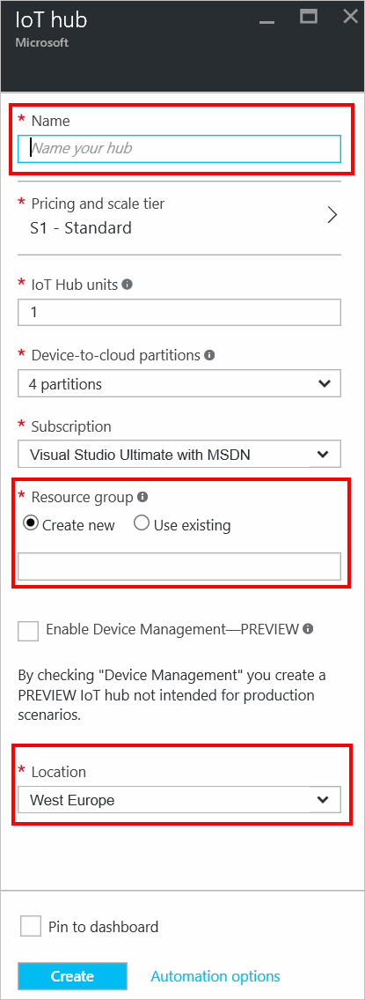
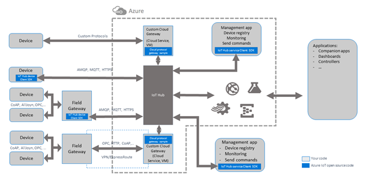

Azure IoT Hub
Estrutura
- Introdução
- Criação e Overview
- SDKs
- Segurança
- Valores
Introdução
O Azure Iot Hub é a plataforma da Microsoft para aplicações entre dispositivos de Internet das Coisas com os demais serviços Azure.
Possui
- Introdução rápida
- Suporte a um amplo conjunto de sistemas operacionais e protocolos
- Ampla integração com o ambiente Azure
- Vasta documentação oficial
Permite
- Conectar e gerenciar bilhões de ativos
- Estabelecer comunicação confiável e bidirecional
- Aprimorar a segurança de suas soluções de IoT
- Ingerir dados em tempo real e carregar arquivos na nuvem
- Fazer uma rica análise de dados
Criando um IoT hub
Criando um IoT hub
Overview
SDKs
A Microsoft disponibiliza o IoT device SDKs que contém um conjunto de ferramentas que facilitam construir aplicações que se conectam e que são administradas pelos serviços disponiveis no Azure IoT Hub.
Este SDK é disponível para Linux, Windows e sistemas operacionais de tempo real.
E possio versões em diversas linguagens, conforme o desenvolvedor se sentir mais a vontade. Sendo elas: C, Node.js, Java, .NET e Python
Além disso a Microsoft também disponibiliza o IoT Gateway SDK (beta).
Ele tem como proposta beneficiar dispositivos legados ou que por algum motivo não poderiam se comunicar diretamente com o hub na nuvem
-
Exemplos:
- Sensores de monitoramento sem conexão TCP/IP direta
- Dispositivos com protocolos descontinuados
- Dispositivos sem suporte a criptografia
- etc.
Segurança
Hoje em dia é comum ouvir falar sobre IoT e todas possibilidades que isso pode gerar.
Porém pouco é discutido sobre segurança em internet das coisas...
Na recente pesquisa de 24 de Outubro de 2016, realizada pela empresa de segurança ESET, foi apurado que:
- 40% dos entrevistados não acham que dispositivos IoT são seguros
- Mais da metade se mostrou desinteressada de adquirir um dispositovo devido a isso.
Em contrapartida, o Azure IoT hub da Microsoft tem a segurança dos dispositivos como um dos seus focos principais
- Permite identidades individuais e credenciais para cada dispositivo
- Mantém confidencialidade para as mensagens, tanto do dispositivos para nuvem como da numvem para o dispositivo
- Permite revogar seletivamente os direitos de acesso de dispositivos específicos.
Além disso, o IoT Hub permite o recebimento dos logs de operação detalhados sobre operações de gerenciamento de identidade e todos os eventos de conectividade de cada dispositivo.
Valores
Calculadora de Preços

Ampla gama de serviços disponíveis
Diversas opções de configuração
Valor adapatado as necessidades da aplicação
Planos do Azure IoT Hub
- Free: voltado apenas para provas de conceito
- S1: para uso moderado do serviço (pequena quantidade de dispositivos)
- S2 para um amplo uso do serviço (grande quantidade de dispositivos)
- S3 para um amplo uso do serviço, recomendado para grandes coorporações (grande quantidade de dispositivos)
Tabela de preço

Nas versões pagas, as mensagens são contabilizadas por blocos de 4KB
Ex.: Um dispositivo enviando 32 KB de dados, terá utilizado 8 mensagens
Na versão Free, as mensagens são contabilizadas por blocos de 0.5KB
Ex.: Um dispositivo enviando 32 KB de dados, terá utilizado 64 mensagens
-
OBS.: tamanho máximo de dados a serem enviados
- Dispositivo para Cloud: 256 KB
- Cloud para Dispositivo: 64 KB
Conclusão
O Azure IoT Hub é um dos melhores serviços disponíveis no momento para o gerenciamento de grandes quantidades de dispositvos em internet das coisas, quantia que pode ir até milhões de ativos conectados.
A Microsoft tem investido muito para que o serviço seja fácil, intuitivo e ajude em conceitos básicos como segurança, já que no ramo de IoT sem um serviço do tipo, ela ainda não se demonstra bem desenvolvida
Dúvidas?
Obrigado
Referências
- Azure Documentation:
- https://azure.microsoft.com
- Krebs on Security: https://krebsonsecurity.com/2016/10/ddos-on-dyn-impacts-twitter-spotify-reddit/
- Tech Runch: https://techcrunch.com/2016/10/21/many-sites-including-twitter-and-spotify-suffering-outage/
- Eset:
- https://www.eset.com/us/resources/detail/survey-internet-of-stranger-things/
- https://www.eset.com/us/resources/detail/half-of-americans-discouraged-from-purchasing-internet-of-things-devices-due-to-cybersecurity-concer/